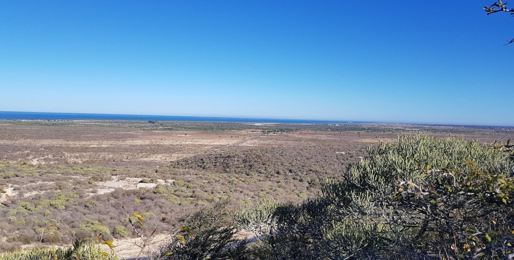

La Nouvelle Aire Protégée de Tsinjoriake, sanctuaire de la
Classée dans la catégorie « monument naturel et paysages harmonieux protégés », cette aire justifie largement son appellation. Les sites sont à couper le souffle. Vous voyagerez entre ciel et terre, vous gravirez des monts pour profiter de paysages à 360° et arpenterez des grottes pour découvrir des couloirs sous-terrain. Une aventure vous attend!
Modèle de tourisme écoresponsable
La NAP de Tsinjoriake
Appuyée par différents organismes, les gestionnaires de l’aire travaillent à conserver au mieux ce sanctuaire. Des aménagements sont ainsi planifiés pour vous permettre une expérience dans la plus grande harmonie avec la nature. Les guides sont également formés aux meilleures pratiques et sauront vous aiguiller sur les bonnes habitudes à prendre pour voyager dans le plus grand respect de la nature environnante. Passez ainsi un séjour écoresponsable contribuant à la gestion durable de l’aire!

Le circuit de la montagne de la table
Ce circuit vous invite à partir en randonnée sportive. Vous aurez l’occasion de gravir la « Montagne de la table » disposant d’une vue exceptionnelle sur les 5900 hectares du parc et ses environs. Vous pourrez ainsi admirer la forêt sèche typique de la région ainsi que les falaises abruptes bordant le littoral sud-ouest.
Le circuit des grottes, entre ciel et terre
Ce circuit vous fera découvrir le réseau sous-terrain qui sillonne l’aire. Divisé en 3 parcours, vous pourrez visiter les grottes de Soradrano et de Binabe qui vous feront découvrir les rituels animistes typiques de la région. Les différents parcours vous feront traverser forêts, plage et sous-terrain, une expérience étonnante!
Le circuit Saint Augustin – Barn Hill
Divisé en 2 parcours, vous visiterez au cours du premier le village de Saint Augustin et sa mangrove environnante typique et le second vous mènera aux hauteurs surplombant la baie de Saint Augustin. Le circuit vous invite ainsi à découvrir le quotidien des locaux, la faune et la flore, mais surtout, vous pourrez admirer des paysages à couper le souffle, notamment si vous avez la chance d’assister à un soleil couchant sur les hauteurs de la baie!
Que faire dans le parc ?
Des hébergements assez rudimentaires sont proposés autour du parc. Vous pourrez ainsi vous adonner au trekking, birdwatching, mais également au surf (une plage est située à 2,5 km du parc) et vous aurez également la possibilité d’y observer dauphins et baleines (selon les périodes).